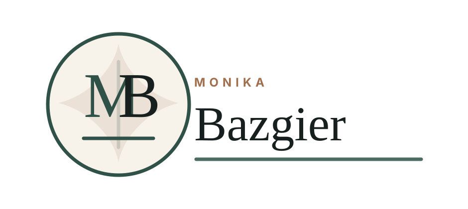
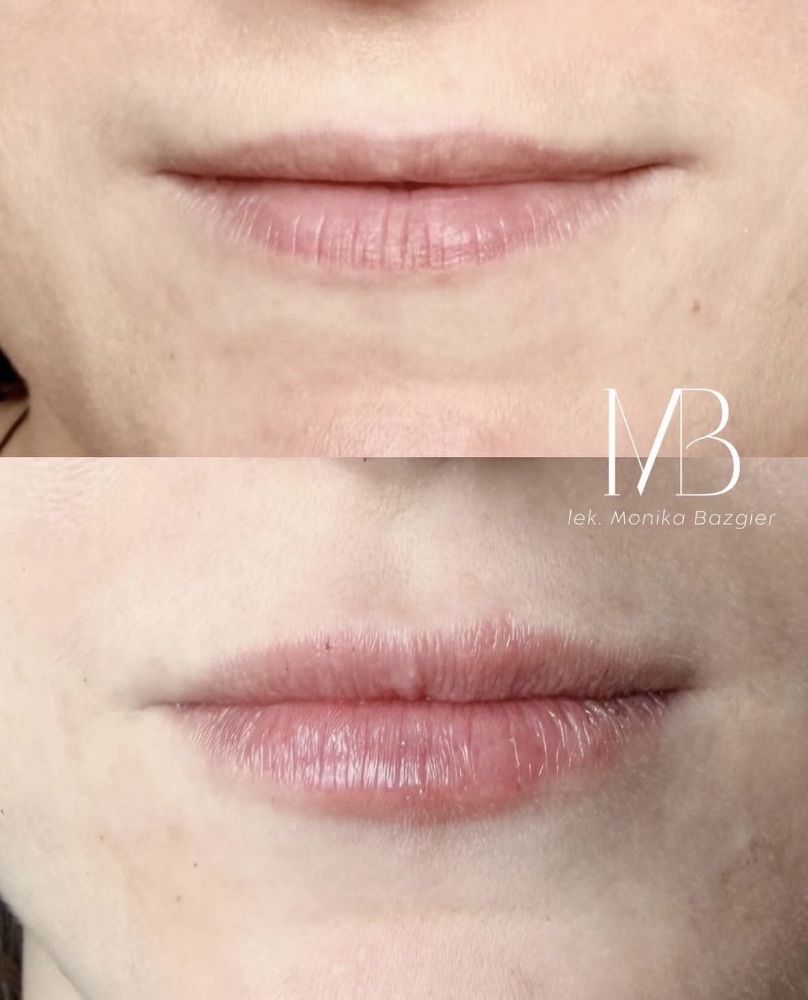

Konsultacja
Wywiad, oczekiwania pacjenta, przeciwwskazania i analiza obszaru zabiegowego.

Monika BazgierLekarz medycyny estetycznej
Konsultacja, analiza proporcji i spokojny plan terapii. Bez presji, z jasnym omówieniem wskazań, przeciwwskazań i realnego zakresu poprawy.

Podejście
Decyzja o zabiegu zaczyna się od wywiadu, oceny wskazań i rozmowy o granicach możliwego efektu. Procedura ma wynikać z planu, a nie z przypadkowego wyboru z listy usług.
Wywiad, oczekiwania pacjenta, przeciwwskazania i analiza obszaru zabiegowego.
Dobór techniki, preparatu i kolejności działań bez presji na natychmiastową decyzję.
Wykonanie zabiegu po kwalifikacji i omówieniu rekonwalescencji oraz zaleceń.
Ocena efektu w czasie właściwym dla danej procedury i indywidualnej reakcji organizmu.
Zakres zabiegów
Konkretna procedura powinna wynikać z konsultacji. Poniższe obszary porządkują najczęstsze potrzeby pacjentów.
Proporcje, nawilżenie, kontur i subtelna korekta asymetrii.
Praca z napięciem mięśni i mimiką bez efektu sztucznego unieruchomienia.
Regeneracja, poprawa jakości skóry i terapie budowane w czasie.
Odbudowa objętości tylko tam, gdzie wynika to z anatomii i planu.
Kwalifikacja i omówienie dostępnych metod ograniczania objawów.
Łączenie procedur w logicznej kolejności, z przerwami i kontrolą efektu.
Efekty
Materiały zdjęciowe należy traktować informacyjnie. Efekt zależy od kwalifikacji, anatomii, techniki i indywidualnej reakcji organizmu.




Zdjęcia przed i po nie stanowią gwarancji uzyskania identycznego rezultatu. O zasadności procedury decyduje konsultacja.
Pierwsza wizyta
Pierwsza wizyta powinna dać pacjentowi jasność: co można poprawić, czego nie warto robić, jakie są przeciwwskazania i jak wygląda okres po zabiegu.
Sprawdź najczęstsze pytania
O lekarzu
Prowadzi konsultacje i zabiegi z zakresu medycyny estetycznej, koncentrując się na bezpieczeństwie, proporcjach i naturalnym efekcie.
Każdy plan poprzedza rozmowa o oczekiwaniach, przeciwwskazaniach i możliwym przebiegu rekonwalescencji.
FAQ
Odpowiedzi są informacyjne. Ostateczną kwalifikację można wykonać tylko podczas konsultacji.
Tak. Konsultacja pozwala ocenić wskazania, przeciwwskazania, oczekiwania i możliwy zakres poprawy.
To zależy od procedury i indywidualnej reakcji organizmu. Część efektów widać szybko, inne wymagają czasu i kontroli.
Tylko wtedy, gdy nie ma przeciwwskazań, pacjent rozumie plan, ryzyka i zalecenia, a procedura nie wymaga przygotowania.
Warto przygotować listę leków, chorób, wcześniejszych zabiegów i pytań. Szczegółowe zalecenia zależą od planowanej procedury.
Przeciwwskazania zależą od procedury. Mogą obejmować między innymi aktywne infekcje, ciążę, karmienie piersią lub określone choroby i leki.
Kontakt
Przed publikacją należy podpiąć finalny numer telefonu, adres gabinetu albo link do systemu rezerwacji. Bez tych danych strona nie powinna być używana jako aktywny kanał pozyskiwania pacjentów.